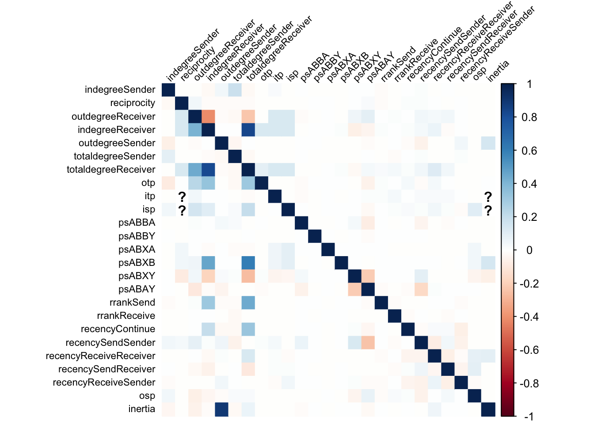

# To generate data
library(remulate)
# For data wrangling
library(tidyverse)
# To plot correlation matrix
library(corrplot)Assessing Collinearity Between Endogenous Statistics in REMS
Relational Event Models (REMs) allow for the estimation of effects that the network structure has on the likelihood of events occurring, by including so-called endogenous statistics as predictors in the model. These statistics are derived from the previous events, and can be of high predictive importance in cases where events are highly dependent on previous ones. A popular example for such an effect is inertia, which measures how often a specific event has occurred in the past.
The fact, that a large number of endogenous statistics can be included in the model, however, brings up the question whether issues of collinearity between them can cause problems in the estimation of the model. To assess this, this document generates data based on effects of endogenous statistics and calculates what other statistics they are most correlated with. Additionally, variance inflation factors (VIFs) are calculated to assess the impact of collinearity on the estimation of the model.
Generating Data
In a first step, we generate some relational event history (REH) data. To do this, we draw upon the remulate package which allows for computationally efficient generation of REH data based on a given set of effects by using C++ in the background. We also use the tidyverse packages for data manipulation and corrplot for visualizing the correlation matrix.
Here, we generate a data set where each is solely influenced by one effect, while all other effects are set to zero. Following effect size conventions used in Cox proportional hazard which can be applied to REMs (Olivier et al., 2017, Schecter and Quintane, 2020), effects were set to \(\log(3)\) for the effect of interest and 0 for all other effects. According to these conventions, these effects correspond to strong effect sizes.
Defining the Effects
We first define the names of the effects, as well as whether they allow for scaling. Then we iteratively create formulas for each effect, where the effect of interest is set to \(\log(3)\) and all other effects are set to 0.
# Define effect names
effect_names <- c(
"indegreeSender",
"reciprocity",
"outdegreeReceiver",
"indegreeReceiver",
"outdegreeSender",
"totaldegreeSender",
"totaldegreeReceiver",
"otp",
"itp",
"isp",
"psABBA",
"psABBY",
"psABXA",
"psABXB",
"psABXY",
"psABAY",
"rrankSend",
"rrankReceive",
"recencyContinue",
"recencySendSender",
"recencyReceiveReceiver",
"recencySendReceiver",
"recencyReceiveSender",
"osp",
"inertia"
)
# Define which effects allow for scaling
scaling <- c(
indegreeSender = TRUE,
reciprocity = TRUE,
outdegreeReceiver = TRUE,
indegreeReceiver = TRUE,
outdegreeSender = TRUE,
totaldegreeSender = TRUE,
totaldegreeReceiver = TRUE,
otp = TRUE,
itp = TRUE,
isp = TRUE,
psABBA = FALSE,
psABBY = FALSE,
psABXA = FALSE,
psABXB = FALSE,
psABXY = FALSE,
psABAY = FALSE,
rrankSend = FALSE,
rrankReceive = FALSE,
recencyContinue = FALSE,
recencySendSender = FALSE,
recencyReceiveReceiver = FALSE,
recencySendReceiver = FALSE,
recencyReceiveSender = FALSE,
osp = TRUE,
inertia = TRUE
)
# Create list to store formulas
formulas <- list()
for (i in effect_names) {
# Define effect for current iteration
terms <- sapply(effect_names, function(effect) {
param_value <- if (effect == i)
"log(3)"
else
"0"
if (scaling[effect]) {
paste0("remulate::", effect, "(", param_value, ", scaling = \"std\")")
} else {
paste0("remulate::", effect, "(", param_value, ")")
}
})
# Paste the terms together
formula <- paste(terms, collapse = " +\n ")
# Create formula
f <- as.formula(paste("~", formula))
# Save the formula to the list
formulas[[i]] <- f
}Generating Data
Then we can generate the data for each effect and save the statistics to a file.
Calculating Correlations Between Statistics
Once the data are generated, we calculate the correlations between the endogenous statistics for each effect. This allows us to identify which statistics are most correlated with the statistic used to generate the data.
For each effect, we load the corresponding statistics file, convert the data into a data frame, compute the correlation matrix, and extract the correlations with the effect of interest. The correlations are then stored in a data frame where each column corresponds to a data-generating effect and each row corresponds to one of the statistics.
# Creating a data frame to store the correlations
correlations <- data.frame(matrix(NA, nrow = length(effect_names), ncol = 0))
rownames(correlations) <- effect_names # set row names to effect names
for (i in names(formulas)) {
# Load the statistics file for the current effect
load(paste0("statistics/statistics_", i, ".RData"))
# Turn statistics into a data frame
statistics_df <- as.data.frame(matrix(statistics, ncol = dim(statistics)[3]))
colnames(statistics_df) <- effect_names
# Compute the correlation matrix
cor_matrix <- cor(statistics_df, use = "pairwise.complete.obs")
# subset to correlations with the effect of interest
cor_matrix <- cor_matrix[i, ]
# add this as a column to the correlations data frame
correlations[,i] <- cor_matrix
# remove statistics_df and statistics to save memory
rm(list = c("statistics_df", "statistics"))
}Warning in cor(statistics_df, use = "pairwise.complete.obs"): the standard
deviation is zero
Warning in cor(statistics_df, use = "pairwise.complete.obs"): the standard
deviation is zeroAfter calculating the correlations, we can plot the correlation matrix to visualize the relationships between the statistics. To do this, we use the corrplot package.
corrplot(as.matrix(correlations),
method = "color", # correlations as colored squares
tl.col = "black", # variable names in black
tl.srt = 45, # rotate variable names
tl.cex = 0.7 # reduce size of the labels
)
As the plot shows, the correlations between the statistics are generally low, indicating that there is no strong collinearity between the endogenous statistics. There are, however, some exceptions where correlations are higher. These are particularly apparent for degree statistics. The table below shows the correlations between the data-generating statistic and others ordered by the absolute value of the correlation for the 10 most correlated statistics.
# data frame with correlations ordered by absolute coefficient
correlations %>%
as.matrix() %>%
t() %>%
as.table() %>%
as.data.frame() %>%
rename(Correlation = Freq) %>%
filter(Var1 != Var2) %>% # remove the diagonal
mutate(AbsCorrelation = abs(Correlation),
Correlation = round(Correlation, 2)) %>%
arrange(desc(AbsCorrelation)) %>%
select(Var1, Var2, Correlation) %>%
head(10) %>%
knitr::kable(
# change column names
col.names = c("Statistic With Effect", "Correlated Statistic", "Correlation"))| Statistic With Effect | Correlated Statistic | Correlation |
|---|---|---|
| outdegreeSender | inertia | 0.90 |
| totaldegreeReceiver | indegreeReceiver | 0.83 |
| indegreeReceiver | totaldegreeReceiver | 0.83 |
| totaldegreeReceiver | psABXB | 0.61 |
| indegreeReceiver | psABXB | 0.47 |
| totaldegreeReceiver | rrankSend | 0.45 |
| outdegreeReceiver | totaldegreeReceiver | 0.45 |
| outdegreeReceiver | indegreeReceiver | 0.41 |
| indegreeReceiver | outdegreeReceiver | -0.41 |
| indegreeReceiver | otp | 0.33 |
The correlations further confirm that collinearity seems to be particularly an issue for data that is generated based on degree statistics.
Calculating Variance Inflation Factors
To further assess the influence of collinearity on model estimation, we calculate variance inflation factors (VIFs) for each effect. VIFs indicate how much the variance of an estimated coefficient is increased due to multicollinearity. A VIF of 1 means no multicollinearity, while values above 5 or 10 are considered problematic.
For each effect, we fit a linear model where the effect of interest is regressed on all other statistics, then calculate the VIF as:
\[ VIF = \frac{1}{1 - R^2} \]
where \(R^2\) is the coefficient of determination of the linear model.
vifs <- vector("numeric", length(effect_names))
names(vifs) <- effect_names
for (i in names(formulas)) {
# Load the statistics file for the current effect
load(paste0("statistics/statistics_", i, ".RData"))
# Turn statistics into a data frame
statistics_df <- as.data.frame(matrix(statistics, ncol = dim(statistics)[3]))
colnames(statistics_df) <- effect_names
# Fit a linear model for each effect
predictors <- setdiff(names(statistics_df), i)
formula <- paste(i, "~", paste(predictors, collapse = " + "))
model <- lm(as.formula(formula), data = statistics_df)
# Calculate VIF
vifs[i] <- 1/(1-summary(model)$r.squared)
}Finally, we can display the VIFs for each statistic. The table below shows the VIFs ordered by their size.
# Create a data frame to store the VIFs
vifs %>%
as.data.frame() %>%
mutate(vifs = round(vifs, 2)) %>%
arrange(desc(vifs)) %>%
select(vifs) %>%
knitr::kable(
# change column names
col.names = c("Statistic", "VIF"))| Statistic | VIF |
|---|---|
| outdegreeSender | 5.20 |
| totaldegreeReceiver | 4.47 |
| indegreeReceiver | 3.55 |
| outdegreeReceiver | 1.32 |
| psABAY | 1.12 |
| psABXY | 1.06 |
| inertia | 1.06 |
| totaldegreeSender | 1.05 |
| recencySendSender | 1.05 |
| indegreeSender | 1.03 |
| reciprocity | 1.03 |
| otp | 1.03 |
| itp | 1.03 |
| isp | 1.03 |
| recencyReceiveReceiver | 1.03 |
| recencySendReceiver | 1.02 |
| osp | 1.02 |
| psABBA | 1.01 |
| recencyContinue | 1.01 |
| recencyReceiveSender | 1.01 |
| psABBY | 1.00 |
| psABXA | 1.00 |
| psABXB | 1.00 |
| rrankSend | 1.00 |
| rrankReceive | 1.00 |
The results, as shown in the table, again indicate that collinearity is not a major issue in the data generated based on the effects for most statistics. Multicollinearity is not a major concern for the estimation of the model, except for degree statistics.
Conclusion
For the majority of endogenous statistics, the results hint at the fact that collinearity does not seem to be an issue when data is generated based on a single effect. The story, however, is different for degree statistics, where collinearity is more pronounced.
Therefore, researchers intending to include degree statistics in their REMs should be aware of the potential issues of collinearity. In such cases, it might be beneficial to consider alternative ways to model the data or to preprocess the data to reduce collinearity.